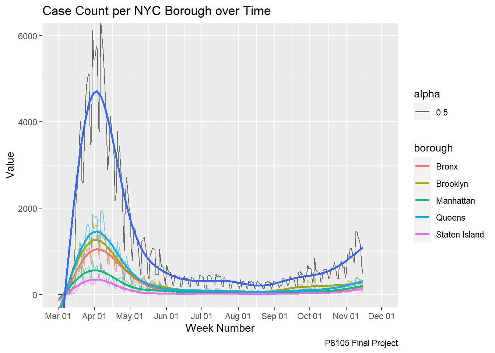
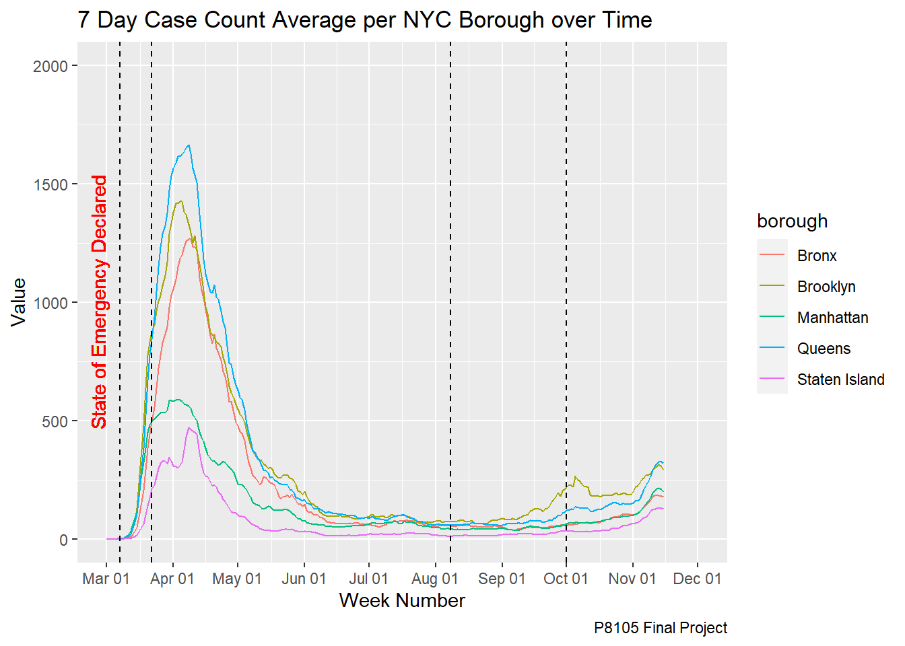
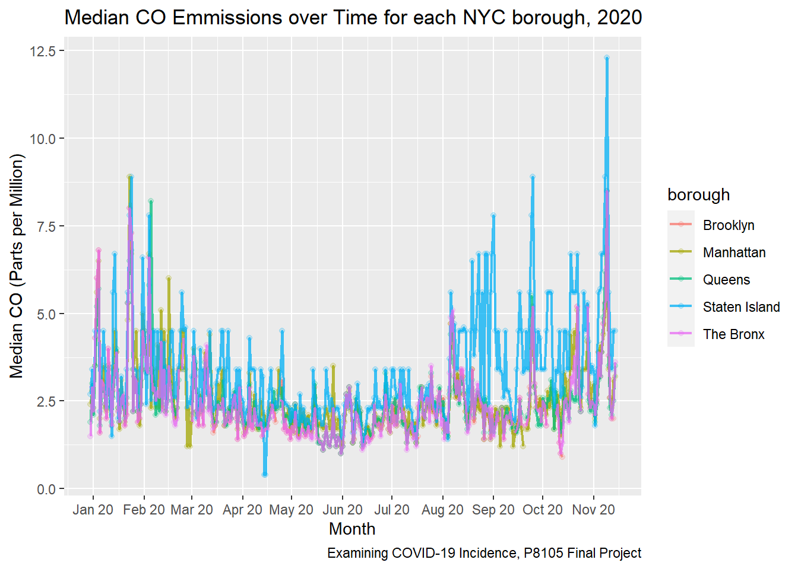
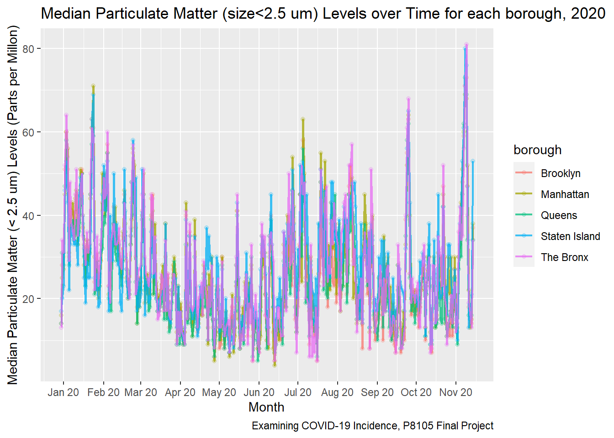
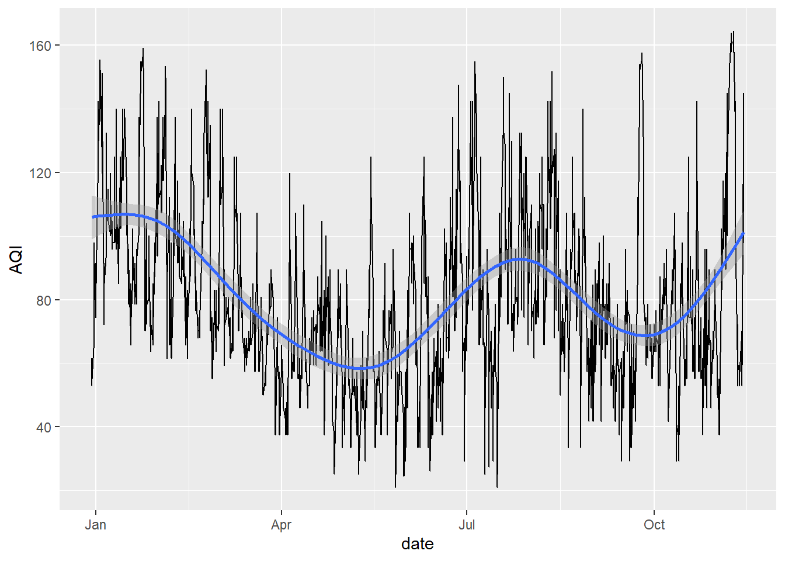

Description of Page:
This page of our website will give you an overview of the process we went through to conduct this analysis. It will show how we explored and cleaned the major data sets that we used to better understand the data as well as the iteration of processes that we used to come up with our final product.
Exploratory Analysis for AQI in 2019 and 2020:
For the AQI variable we obtained the data from the Air Quality Open Data Platform and filtered the data to only include information about New York City. We then looked online and found out that the EPA actually reports the Air Quality of a specific place by using the Air Quality Index which is calculated by using a piecewise linear function for each pollutant and then taking the maximum value of each pollutant’s AQI value to calculate the overall AQI value. The code we implemented to do this is shown below. Note that we did not include the code for 2019 on this page since the procedure is exactly the same as for 2020, if you would like to see the code for 2019 please reference the process.Rmd document on this repository.
# Data import and cleaning
library(tidyverse)
library(data.table)
AQI_2020 = fread("./data/waqi-covid19-airqualitydata-2020.csv") %>%
janitor::clean_names() %>%
filter(country == "US") %>%
filter(city == "Brooklyn" | city == "Queens" | city == "The Bronx" | city == "Staten Island" | city == "Manhattan") %>%
mutate(borough = city) %>%
select(-c(city, country)) %>%
pivot_wider(names_from = "specie", values_from = c("count", "min", "max", "median", "variance")) %>%
select(date, borough, median_pm25, median_o3, median_co, median_no2)
# Write functions that calculate the individual AQI (IAQI) for each individual pollutant
IAQI_formula_o3 = function(AQI){
if (is.na(AQI) == TRUE) { # Accounting for missing values
AQI_o3 = 0
}
else if (AQI <= 54 && AQI >= 0 ) {
IAQI_o3 = (50/54)*(AQI - 0) + 0
}
else if (AQI <= 70 && AQI > 54 ) {
IAQI_o3 = (50/22)*(AQI - 55) + 51
}
else if (AQI <= 85 && AQI > 70) {
IAQI_o3 = (50/14)*(AQI - 70) + 101
}
else if (AQI <= 105 && AQI > 85 ) {
IAQI_o3 = (50/19)*(AQI - 86) + 151
}
else if (AQI <= 200 && AQI > 105 ) {
IAQI_o3 = (99/94)*(AQI - 106) + 201
}
else if (AQI <= 404 && AQI > 204) {
IAQI_o3 = (99/199)*(AQI - 205) + 201
}
else{
IAQI_o3 = (199/199)*(AQI - 405) + 301
}
}
IAQI_formula_pm25 = function(AQI){
if (is.na(AQI) == TRUE) { # Accounting for missing values
IAQI_pm25 = 0
}
else if (AQI <= 12 && AQI >= 0 ) {
IAQI_pm25 = (50/12)*(AQI - 0) + 0
}
else if (AQI <= 35.4 && AQI >= 12.1 ) {
IAQI_pm25 = (50/23.3)*(AQI - 12.1) + 51
}
else if (AQI <= 55.4 && AQI >= 35.5 ) {
IAQI_pm25 = (50/19.9)*(AQI - 35.5) + 101
}
else if (AQI <= 150.4 && AQI >= 55.5 ) {
IAQI_pm25 = (50/94.9)*(AQI - 55.5) + 151
}
else{
IAQI_pm25 = (99/99.9)*(AQI - 150.5) + 201
}
}
IAQI_formula_co = function(AQI){
if (is.na(AQI) == TRUE) { # Accounting for missing values
IAQI_co = 0
}
else if (AQI <= 4.4 && AQI >= 0) {
IAQI_co = (50/4.4)*(AQI - 0) + 0
}
else if (AQI <= 9.4 && AQI >= 4.5 ) {
IAQI_co = (50/4.9)*(AQI - 4.5) + 51
}
else{
IAQI_co = (199/19.9)*(AQI - 30.5) + 301
}
}
IAQI_formula_no2 = function(AQI){
if (is.na(AQI) == TRUE) { # Accounting for missing values
IAQI_no2 = 0
}
else if (AQI <= 53 && AQI >= 0 ) {
IAQI_no2 = (50/53)*(AQI - 0) + 0
}
else if (AQI <= 100 && AQI >= 54 ) {
IAQI_no2 = (50/46)*(AQI - 54) + 51
}
else{
IAQI_no2 = (50/259)*(AQI - 101) + 101
}
}
# Generate IAQIs, determine AQI and AQI category based on max IAQI per day
AQI_2020 =
AQI_2020 %>%
mutate(
IAQI_o3 = map(median_o3, IAQI_formula_o3),
IAQI_pm25 = map(median_pm25, IAQI_formula_pm25),
IAQI_co = map(median_co, IAQI_formula_co),
IAQI_no2 = map(median_no2, IAQI_formula_no2)
) %>%
rowwise() %>%
mutate(
AQI = max(IAQI_o3, IAQI_pm25, IAQI_co, IAQI_no2, na.rm = TRUE), # Taking max of the individual AQI scores
AQI_category =
if_else(
AQI <= 50 & AQI >= 0,
"Good",
if_else(
AQI <= 100 & AQI > 50,
"Moderate",
if_else(
AQI <= 150 & AQI > 100,
"Unhealthy for Sensitive Populations",
"Unhealthy")
)
)
)After computing the AQI’s for the 2019 and 2020 data we then merged the two data sets to try to compare the two years to see if there was any significant changes in Air Quality between 2019 (when COVID had not hit yet) versus in 2020 (during the time of COVID).
AQI_2019_and_2020 =
rbind(AQI_2019, AQI_2020) %>%
as_tibble() %>%
mutate(
date = as.Date(date, tryFormats = c("%Y-%m-%d")),
borough = recode(borough, "The Bronx" = "Bronx"),
IAQI_o3 = unlist(IAQI_o3),
IAQI_pm25 = unlist(IAQI_pm25),
IAQI_co = unlist(IAQI_co),
IAQI_no2 = unlist(IAQI_no2)
)Exploratory Analysis and Data Cleaning for COVID Data Set:
We then examined the COVID cases data set and cleaned the data to make the data more readable. This included changing the format of the date variable as well as pivoting the data longer so we can see COVID case trends per borough. We also added in a variable that indicates dates in which NY Government COVID policies were enacted. The code we used to do this is shown below.
nyc_daily_borough_testing =
read_csv(
"./data/covid_data/nyc_daily_covid.csv") %>%
janitor::clean_names() %>%
rename(date = date_of_interest) %>%
mutate(
date = as.Date(date, format = "%m/%d/%Y"),
date = as.Date(date, tryFormats = c("%Y-%m-%d"))
) %>%
pivot_longer(
bx_case_count:si_death_count_7day_avg,
names_to = "borough_variable",
values_to = "observed_value"
) %>%
mutate(
borough_variable = str_replace(borough_variable, "bx_", "Bronx/"),
borough_variable = str_replace(borough_variable, "bk_", "Brooklyn/"),
borough_variable = str_replace(borough_variable, "qn_", "Queens/"),
borough_variable = str_replace(borough_variable, "si_", "Staten Island/"),
borough_variable = str_replace(borough_variable, "mn_", "Manhattan/")
) %>%
separate(borough_variable, into = c("borough", "observation_type"), sep = "/") %>%
arrange(date, borough, observation_type, observed_value) %>%
pivot_longer(
case_count:incomplete,
names_to = "total_observation_type",
values_to = "total_observed_value"
) %>%
filter(observation_type == c("case_count", "case_count_7day_avg"))
# Add proof-of-concept covid policy changes to df
# Maybe consider deleting this later
nyc_daily_borough_testing =
nyc_daily_borough_testing %>%
mutate(
policy_change = case_when(
date == "2020-03-07" ~ "State of Emergency",
date == "2020-03-22" ~ "PAUSE Order",
date == "2020-08-08" ~ "Phase 1 Opening",
date == "2020-10-01" ~ "Primary Schools Open"),
dates_vline = date,
dates_vline = case_when(
date == "2020-03-07" ~ "TRUE",
date == "2020-03-22" ~ "TRUE",
date == "2020-08-08" ~ "TRUE",
date == "2020-10-01" ~ "TRUE")
)Exploratory Plots for COVID Case Data and AQI Data:
nyc_daily_borough_testing %>%
filter(observation_type == c("case_count")) %>%
filter(total_observation_type == c("case_count")) %>%
group_by(date, borough, observation_type) %>%
ggplot(aes(x = date)) +
geom_line(aes(x = date, y = observed_value, color = borough, alpha = 0.5)) +
geom_line(aes(x = date, y = total_observed_value, alpha = 0.5, group = total_observation_type)) +
geom_smooth(
aes(x = date, y = observed_value, color = borough),
alpha = 0.8, se = F,
method = "gam") +
geom_smooth(
aes(x = date, y = total_observed_value),
alpha = 0.8, se = F) +
scale_x_date(date_breaks = "1 month", date_labels = "%b %d", limits = as.Date(c("2020-03-01", "2020-12-01"))) +
coord_cartesian(ylim = c(0, 6000)) +
labs(
title = "Case Count per NYC Borough over Time",
x = "Week Number",
y = "Value",
caption = "P8105 Final Project")## Warning: Removed 5 rows containing non-finite values (stat_smooth).
## Warning: Removed 5 rows containing non-finite values (stat_smooth).## Warning: Removed 5 row(s) containing missing values (geom_path).
## Warning: Removed 5 row(s) containing missing values (geom_path).
For this plot we wanted to explore how cases changed over time for each borough of New York City. Things we were looking for were any outliers in the data, which borough had the highest number of cases, and when did cases start to increase/decrease. We then compared our preliminary findings from this plot to other plots/data to assess why cases may have gone up or down at certain points in time.
nyc_daily_borough_testing %>%
filter(observation_type == c("case_count_7day_avg")) %>%
group_by(date, borough, observation_type) %>%
ggplot(aes(x = date, y = observed_value, color = borough)) +
geom_line() +
geom_vline(xintercept = as.numeric(
as.Date(
c("2020-03-07","2020-03-22", "2020-08-08", "2020-10-01"))),
linetype = 2) +
geom_text(
aes(x = as.Date("2020-03-07"),
label = c("State of Emergency Declared"),
y = 1000),
alpha = 0.5, colour = "red", angle = 90, vjust = -1, text = element_text(size = 6)) +
scale_x_date(date_breaks = "1 month", date_labels = "%b %d", limits = as.Date(c("2020-03-01", "2020-12-01"))) +
coord_cartesian(ylim = c(0,2000)) +
labs(
title = "7 Day Case Count Average per NYC Borough over Time",
x = "Week Number",
y = "Value",
caption = "P8105 Final Project")## Warning: Ignoring unknown parameters: text## Warning: Removed 20 row(s) containing missing values (geom_path).
In this plot we were testing to see if we could add vertical lines corresponding to the date that certain government mandates were enacted. We created this plot to assess if government mandates had an effect on the case count over time.
AQI_2020 %>%
ggplot(aes(x = date, y = median_co, color = borough)) +
geom_point(alpha = .2) +
geom_line(alpha = .75, size = .75) +
scale_x_date(date_breaks = "1 month", date_labels = "%b %y") +
labs(
title = "Median CO Emmissions over Time for each NYC borough, 2020",
x = "Month",
y = "Median CO (Parts per Million)",
caption = "Examining COVID-19 Incidence, P8105 Final Project") ## Warning: Removed 92 rows containing missing values (geom_point).## Warning: Removed 4 row(s) containing missing values (geom_path).
AQI_2020 %>%
ggplot(aes(x = date, y = median_pm25, color = borough)) +
geom_point(alpha = .2) +
geom_line(alpha = .75, size = .75) +
scale_x_date(date_breaks = "1 month", date_labels = "%b %y") +
labs(
title = "Median Particulate Matter (size<2.5 um) Levels over Time for each borough, 2020",
x = "Month",
y = "Median Particulate Matter (< 2.5 um) Levels (Parts per Millon)",
caption = "Examining COVID-19 Incidence, P8105 Final Project") 
AQI_2020 %>%
group_by(borough) %>%
ggplot(aes(x = date, y = AQI)) +
geom_line() +
geom_smooth()
These plots are some of the preliminary plots we made to explore and assess some of the trends in the AQI data. We first made a plot assessing the median CO levels (ppm), an important indicator of air quality, over time for each borough to see if there were any distinct trends in CO levels over time. The second plot we made was for the median particulate matter levels over time for each borough to see if there were any trends in the amount of particulate matter in the air. The last plot we made was an attempt to do GAM smoothing on the AQI data which was something that we did not find necessary in our final analysis as we instead took the 7 day rolling average of AQI for each borough and used this value in our plot, which helped smooth out the AQI lines and uncover more trends that we missed with just the AQI per day variable.
Joining the AQI and COVID Data:
After conducting some exploratory analysis through the use of these charts and cleaning the datasets, we wanted to merge the AQI and COVID data to get a sense of how COVID cases affected the AQI for each borough over time. We thus did a left join of the COVID data to the AQI data by date and borough to accomplish this.
AQI_covid_master =
left_join(nyc_daily_borough_testing, AQI_2019_and_2020, by = c("date", "borough"))As stated before since we realized that GAM smoothing may not be the best option for us when plotting AQI, we calculated the 7 day rolling average of the AQI which helped to smooth out our AQI line. This was done for the overall AQI as well as the Carbon Monoxide AQI as we use both in our final analysis to come to a clear conclusion about the affect of Coronavirus on Air Quality.
total_AQI = AQI_covid_master %>%
select(date, borough, AQI) %>%
distinct(date, borough, .keep_all = TRUE) %>%
group_by(date) %>%
mutate(avg_AQI = mean(AQI)) %>%
ungroup() %>%
select(date, avg_AQI) %>%
distinct(date, .keep_all = TRUE) %>%
arrange(date) %>%
mutate(AQI_7day_avg = zoo::rollmean(avg_AQI, k = 7, fill = NA))AQI_by_borough = AQI_covid_master %>%
select(date, borough, IAQI_co) %>%
distinct(date, borough, .keep_all = TRUE) %>%
group_by(borough) %>%
arrange(date) %>%
mutate(co_borough_7day_avg = zoo::rollmean(IAQI_co, k = 7, fill = NA)) %>%
ungroup() %>%
select(-IAQI_co)We then merged these two rolling averages into our final data frame by using a left join.
AQI_covid_master = AQI_covid_master %>%
left_join(total_AQI, by = "date") %>%
left_join(AQI_by_borough, by = c("date", "borough"))Dashboard Selection:
For our dashboard we initially were thinking of doing a plotly flexdashboard until we came up with the idea to add user interactivity for our AQI map. Then after searching on the internet we found out how to create a shiny dashboard which allows the user to change our AQI map to see the AQI values by borough on a specific date. This increases the interpretability and functionality of our AQI map plot as it allows the user to make conclusions about the AQI for whatever date they choose which they would not be able to do on a static plotly map. We initially just included the AQI value and the borough name for our labels on the AQI map plot but after consulting with Gavin we realized that we should add more data such as the AQI for CO.
Shiny Leaflet for Dashboard:
The code below shows the process that we used to create this interactive map for AQI per borough as described in the previous section. We used set coordinates (longitude and latitude values) that represented each borough and created a data frame of all of these values. These coordinates would then be used to create a point on the map to show the AQI for that particular borough. Then we selected colors for these points on the map based on the category the overall AQI was for that day. Due to wanting user interactivity we felt that it was best to use a shiny leaflet plot as we could add a date input sidebar that would allow the user to see AQI values per borough on the map for a specific day.
borough_coord = tibble("borough" = c("Bronx", "Manhattan", "Brooklyn", "Queens", "Staten Island"), "latitude" = c(40.8448, 40.7731, 40.6782, 40.7282, 40.5795), "longitude" = c(-73.8648, -73.9712, -73.9442, -73.7949, -74.1502))
color_df = colorFactor(c("green", "yellow", "orange", "red"), domain = c("Good", "Moderate", "Unhealthy for Sensitive Populations", "Unhealthy"))
AQI_covid_master = AQI_covid_master %>%
left_join(borough_coord, by = "borough")
output$map = renderLeaflet({
AQI_covid_master %>%
filter(date == input[["date"]]) %>%
mutate(popup = str_c("<strong>", borough, "</strong>", "<br/>", "Date: ", date, "<br/>", "Air Quality Category: ", AQI_category, "<br/>", "Air Quality Index: ", round(AQI, 2), "<br/>", "Carbon Monoxide Level: ", lapply(IAQI_co, round, 2)) %>%
map(htmltools::HTML)) %>%
leaflet() %>%
addTiles() %>%
setView(-73.95, 40.7228, zoom = 11) %>%
addProviderTiles("CartoDB.Positron") %>%
addCircleMarkers(
radius = 20,
lng = ~longitude,
lat = ~latitude,
stroke = FALSE,
fillOpacity = 0.8,
color = ~color_df(AQI_category),
label = ~popup
) %>%
addLegend("bottomright", colors = c("green", "yellow", "orange", "red"),
labels = c("Good", "Moderate", "Unhealthy for Sensitive Populations", "Unhealthy"),
title = "Air Quality Index")
})
leafletOutput('map', height=1000) dateInput(
"date",
label = h3("Date:"),
value = "2020-02-29", # Default value
min = "2020-02-29", # Min value
max = "2020-11-14") # Max valueOther Plots:
For the other plots on our final dashboard we used plotly as we didn’t need to have user input since they were showing the trend of different variables over time anyways. However we still wanted to add some features to increase the clarity of our plots such as showing labels when a user hovers over a specific data point in the plot. Thus, we used plotly instead of just a ggplot as plotly would allow us to incorporate this feature into our line plots. The code we used to create these line plots is shown below.
renderPlotly({
AQI_covid_master %>%
mutate(
text_label_1 = str_c("Date: ", date, "\nAQI Index Value: ", AQI_7day_avg),
text_label_2 = str_c("Date: ", date, "\nCOVID Case Count: ", total_observed_value)
) %>%
filter(observation_type == c("case_count")) %>%
filter(total_observation_type == c("case_count")) %>%
plot_ly(
x = ~date,
y = ~AQI_7day_avg,
name = "AQI Index (7 Day Rolling Avg.)",
type = "scatter",
mode = "lines",
opacity = 0.3,
text = ~text_label_1,
line = list(color = "#FFA500")
) %>%
add_trace(
x = ~date,
y = ~total_observed_value,
type = "scatter",
mode = "lines",
name = "COVID Case Count",
line = list(color = "#005EFF"),
opacity = 0.8,
text = ~text_label_2,
yaxis = "y2",
inherit = FALSE) %>% #covid data
layout(
xaxis = list(title = "Date"),
yaxis = list(side = "left", title = "AQI Index (7 day avg)", showgrid = FALSE, zeroline = FALSE),
yaxis2 = list(side = "right", overlaying = "y", title = "Case Count", showgrid = FALSE, zeroline = FALSE)
)
})renderPlotly({
AQI_covid_master %>%
mutate(
text_label_3 = str_c("Date: ", date, "\nBorough: ", borough, "\nAQI Index Value: ", co_borough_7day_avg),
text_label_4 = str_c("Date: ", date, "\nCOVID Case Count: ", total_observed_value)
) %>%
mutate(borough_titles = str_c("Carbon Monoxide IAQI ", borough)) %>%
filter(total_observation_type == "case_count") %>%
plot_ly(
x = ~date,
y = ~co_borough_7day_avg,
split = ~borough_titles,
type = "scatter",
mode = "lines",
opacity = 0.3,
text = ~text_label_3,
color = ~borough_titles,
colors = "Oranges"
) %>%
add_trace(
x = ~date,
y = ~total_observed_value,
type = "scatter",
mode = "lines",
line = list(color = "#005EFF"),
opacity = 0.8,
text = ~text_label_4,
yaxis = "y2",
inherit = FALSE,
name = "NYC COVID Case Count"
) %>%
layout(
legend = list(x = "Jul 1, 2020", y = 120),
xaxis = list(title = "Date"),
yaxis = list(side = "left", title = "CO IAQI (7 day avg.)", showgrid = FALSE, zeroline = FALSE),
yaxis2 = list(side = "right", overlaying = "y", title = "Case Count", showgrid = FALSE, zeroline = FALSE)
)
})Rachel Heise, Fiona Ehrich, Emil Hafeez, Anmol Singh